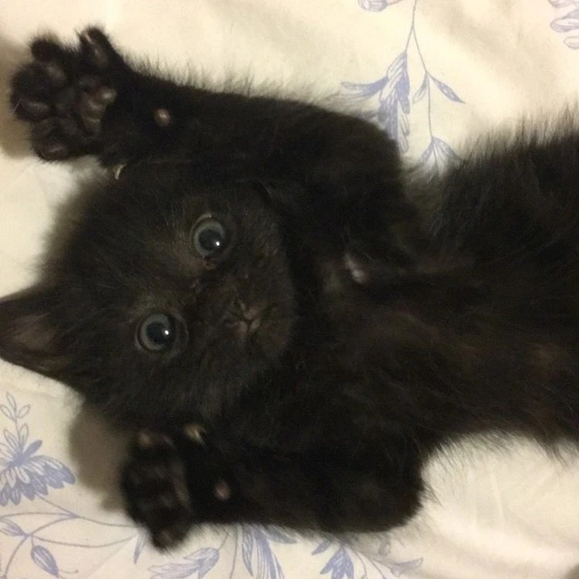

Amor por los gatos
Somos una pareja que ama a los gatos y disfruta de su compañía. En Ronroneos Felices, cuidamos a tu gato con cariño y paciencia, respetando su rutina y personalidad. Queremos que se sienta cómodo y acompañado mientras vos estás fuera de casa.


Lo que más nos gusta de cuidar gatos
Nos encantan esos pequeños momentos en los que un gato empieza a confiar: cuando deja de mirarnos desde lejos, se acerca a olfatearnos o se acomoda cerca nuestro para dormir. Cada uno tiene su manera de decir «ya estoy cómodo», y nos gusta descubrirla.
Los detalles que hacen la diferencia
Antes de la primera visita, nos gusta que nos cuentes esas cosas que solo vos sabés: cómo te pide comida, cuál es su escondite favorito o qué juguete lo hace salir de su siesta. Así podemos acompañarlo de una manera que le resulte familiar mientras vos no estás.